Robot Design

Consistency starts with a strong base. For our first year, we intentionally built a bulkier robot because it helped us gain confidence with swaps, alignment, and repeatable setup.
We used CAD views and spinning renders to study the frame from every angle before committing to the build. The result is a box-style robot with a protected hub, large attachment surfaces, and bright Tidal Engineers colors.
Protected Core & Attachment Rails
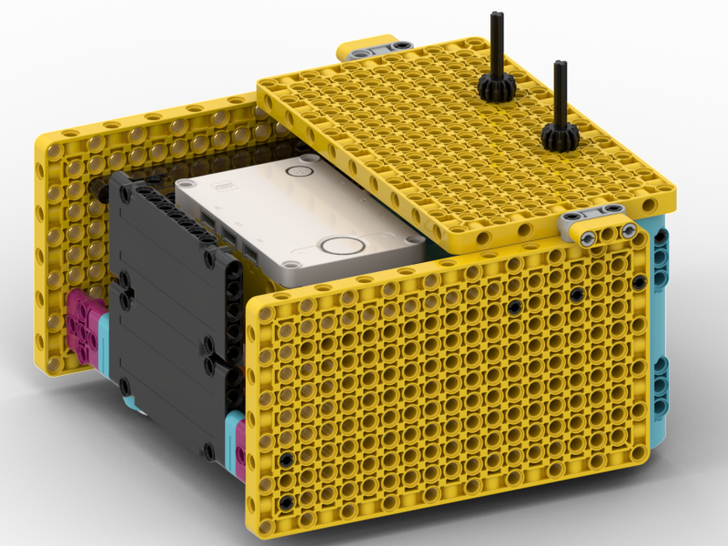
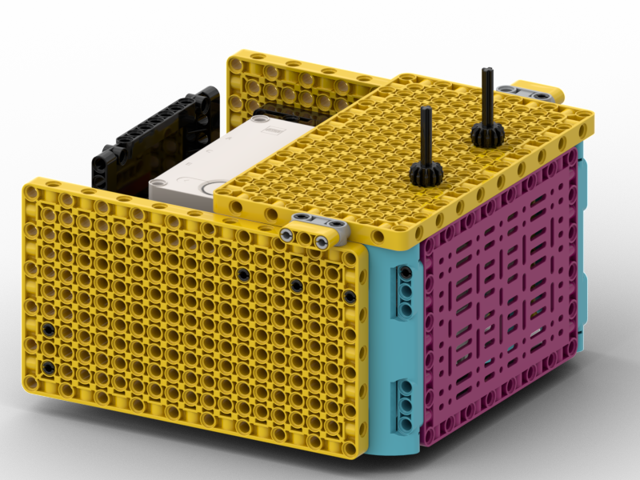
Both drive motors were placed in the front, then we added a bridge to reduce flex. The yellow technic panels give the team many connection points, while the cyan side supports and magenta side panels help keep the core strong and recognizable.
CAD Design: BrickLink Studio
We created a digital CAD model of our robot and attachments in BrickLink Studio so we could test ideas virtually before building them in real life. This helped us experiment with different designs, improve fit and movement, and quickly spot problems before using LEGO pieces and motors.
Using CAD also made it easier to share ideas as a team, plan upgrades, and build more efficiently during practices.
Robot View Gallery
We used multiple renders to inspect the robot from the top, front, sides, and attachment angles. Click any thumbnail to enlarge.
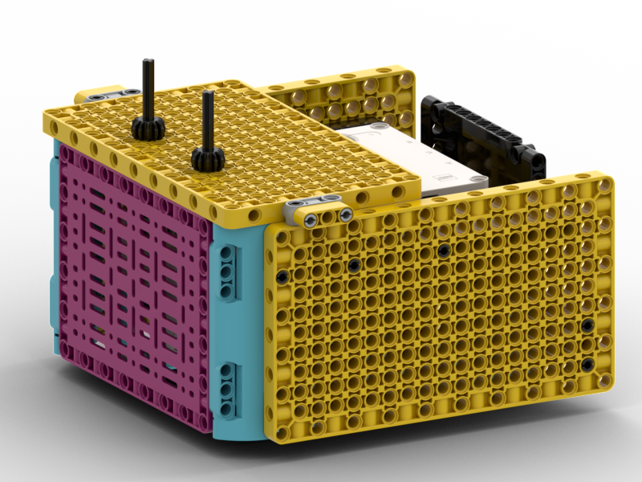


The gallery helps judges see both the finished model and the design thinking behind the build.
Different Motor Setups
We tested different motor placements and orientations before choosing our final setup. The goal was to find a layout that made the robot stable, kept the drive base strong, and gave us enough room to swap attachments quickly.
What We Compared
We looked at how each motor setup affected balance, cable routing, attachment space, and how easy it was for the team to repair or adjust the robot during practice.
What We Chose
Our final design keeps the drive motors aligned in the front and uses a protected core with a top-mounted attachment gear system. That helped reduce flex, make alignment more repeatable, and keep important mechanisms easy to inspect.
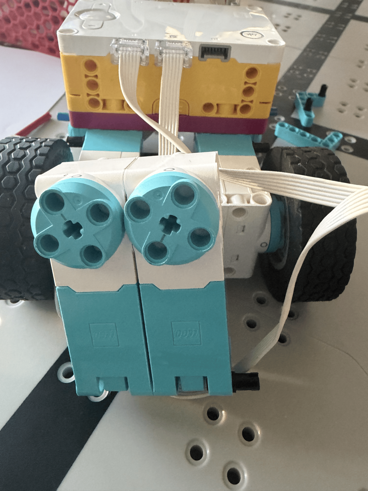
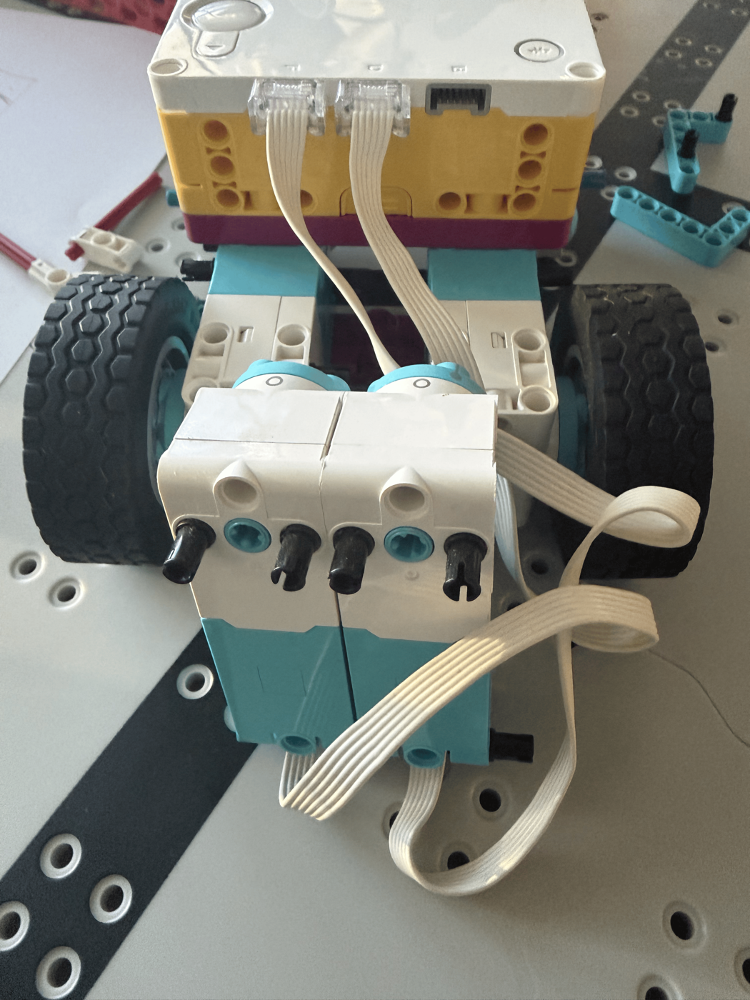
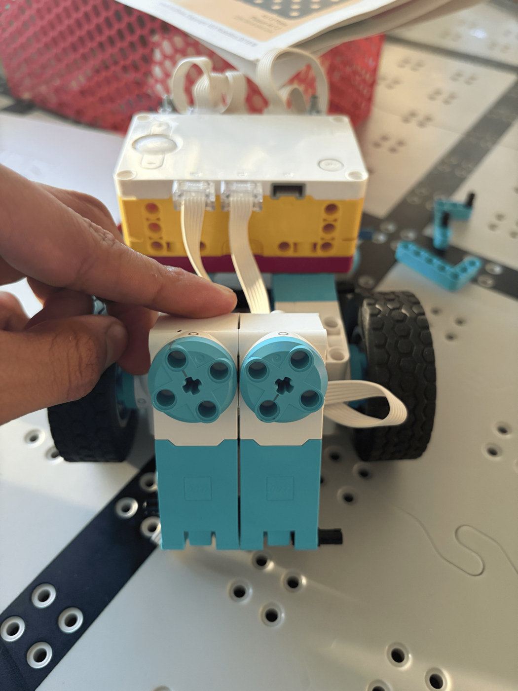
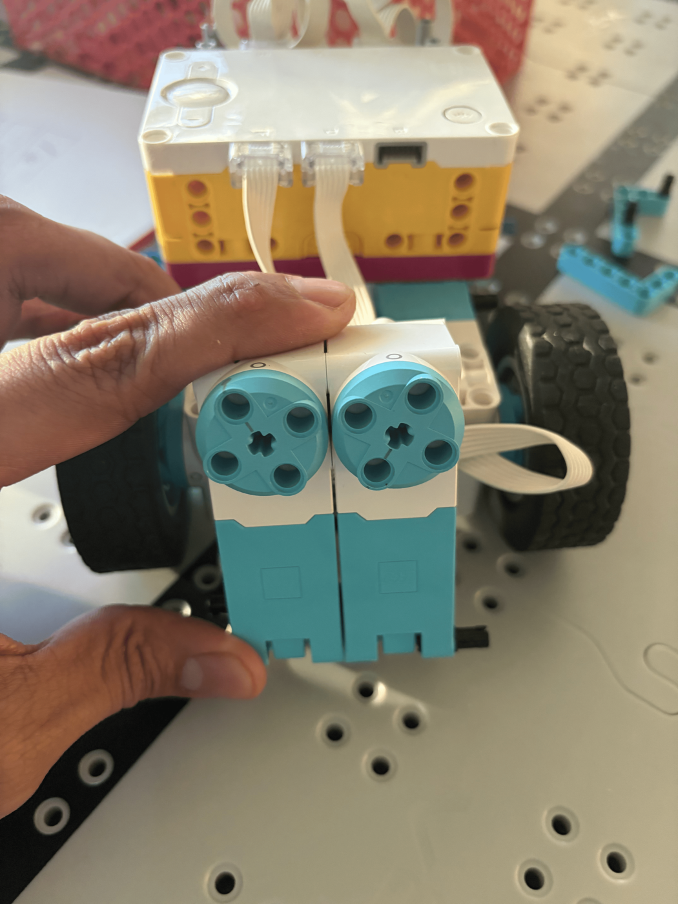
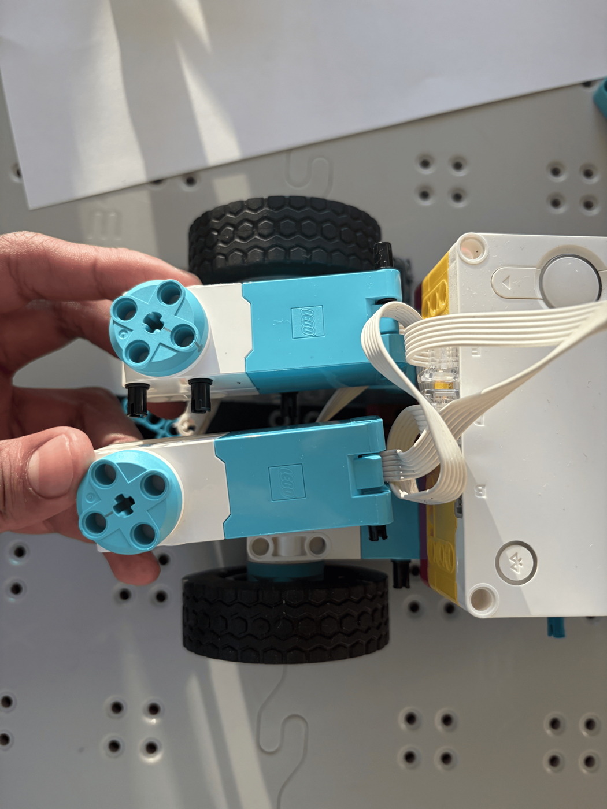
Click any image to compare the motor placement options up close.
Testing for Accuracy
At first, we focused on testing our robot's speed and turn accuracy. Before attempting missions, we wanted to understand how different motor speeds affected performance and reliability. We investigated two key questions:
- What motor speed gives the best balance of speed and accuracy?
- What speed makes the most accurate turn?
By running multiple trials and collecting data, we learned that the fastest robot is not always the most successful. These tests helped us find the right balance between speed, precision, and consistency for competition runs.
- Tested 5 different drive speeds from 10% to 100%.
- Measured travel time and stability at each speed.
- Used repeated trials to ensure reliable results.
- Tested turns at different motor speeds.
- Measured turning accuracy and consistency.
- Used the gyro sensor to improve accuracy and help the robot recover from disturbances.
- Repeated the trials to compare reliable results.
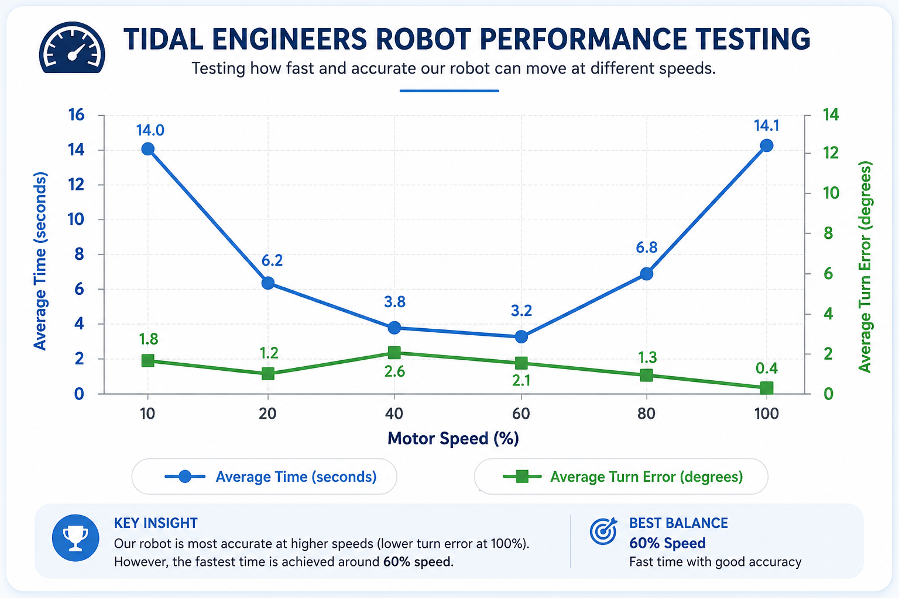
Attachment System
Attachment Mechanism
The large front and rear connection surfaces make it easier for rookies to build, test, remove, and improve attachments between runs.
Clips Reduce Small Errors
We created an innovative solution for front-heavy attachments by adding a small clip to secure the pinless attachment to the robot, preventing it from tilting during runs. This improved alignment and repeatability.
Design Priorities
Stable Rookie Base
We prioritized a simple, strong base over a complicated build so every teammate could understand and improve it.
Easy Attachment Testing
Lots of open technic holes gave us flexibility to keep trying ideas, which mattered because our team learned by building, testing, and rebuilding.
Mission Strategy & Brainstorming
Student Brainstorming & Sketches (Collage)


Click any sketch to open a larger view. These quick drawings capture early ideas and attachment concepts so visitors can scan options at a glance.
💡 Brainstorming by the Numbers: Each of our 4 team members generated at least 2 unique ideas for all 15 missions—resulting in 120+ total ideas to analyze and refine!
Mission Analysis & Sorting System
Before designing our robot and planning runs, we categorized all 15 missions by action type, difficulty, and point value. This systematic analysis helped us identify natural groupings, prioritize which missions to attempt, and keep improving the strategy as our competition experience grew.
🔴 Push Missions
7 missions require pushing objects or models
🔵 Pull Missions
3 missions involve pulling mechanisms
🟡 Pick Up/Drop Off
5 missions require precise object manipulation
🟢 Lift Missions
3 missions need vertical lifting action
✅ Easy Missions
6 MissionsHigh success rate, straightforward execution, great for building confidence
⚠️ Medium Missions
5 MissionsModerate complexity, requires careful programming and attachment design
🔥 Hard Missions
3 MissionsHigh precision required, multiple failure points, advanced mechanisms needed
🏆 Total Available Points
American Robotics Invitational maximum/attempted score across all 15 missions
Project Management & Workflow
Run Groupings & Strategy
American Robotics Invitational Run Plan
After the Hudson Valley Regional Championship, we expanded our strategy from a five-run championship plan into a six-run American Robotics Invitational plan that attempts all 15 missions and targets 545 points.
Previous Championship Plan
Our earlier plan focused on five reliable runs and 12 grouped missions. It helped us prioritize consistency, fast attachment changes, and repeatable paths during championship competition.
Current Invitational Plan
The new plan covers every mission in six cleaner runs. Judges can read the full run order below from left to right.
Run 1
Run 2
Run 3
Run 4
Run 5
Run 6
📊 Strategic Grouping Results
We prioritized consistent, repeatable runs over attempting all 15 missions, then continued iterating our strategy through the Hudson Valley Regional Championship and toward the American Robotics Invitational.
Team Duos & Side Assignments
Mission Runs: Design & Execution
Our robot has continued to evolve throughout the season. At Qualifiers, our goal was consistency—making sure the robot could complete missions successfully every time. For Regionals, we focused on scoring more points while staying reliable by analyzing our runs, mission choices, and robot paths. As we prepare for Internationals, our focus is simplifying and speeding up our strategy through more efficient routes, fewer movements, and versatile attachments that can complete multiple jobs. We learned that the best way to level up is not by making things more complicated, but by making them smarter and more efficient.
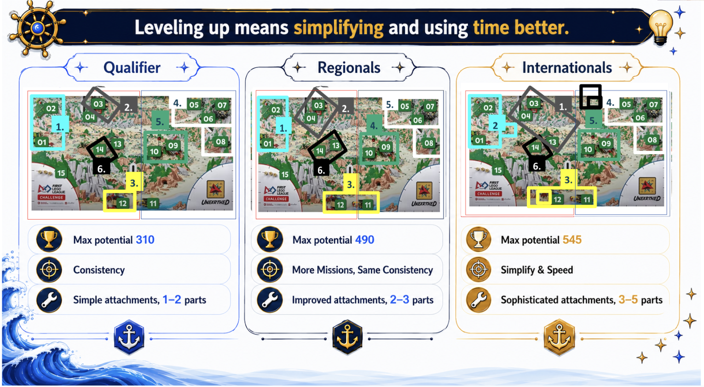
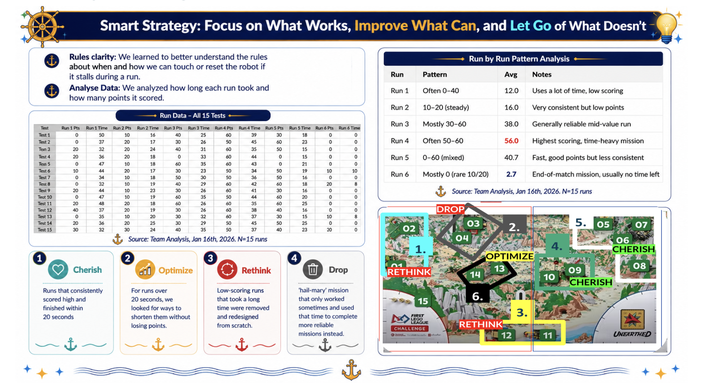
Run 1: Missions 3, 4 & 13
Missions: Mission 3, Mission 4, Mission 13
Points Target: 70 points
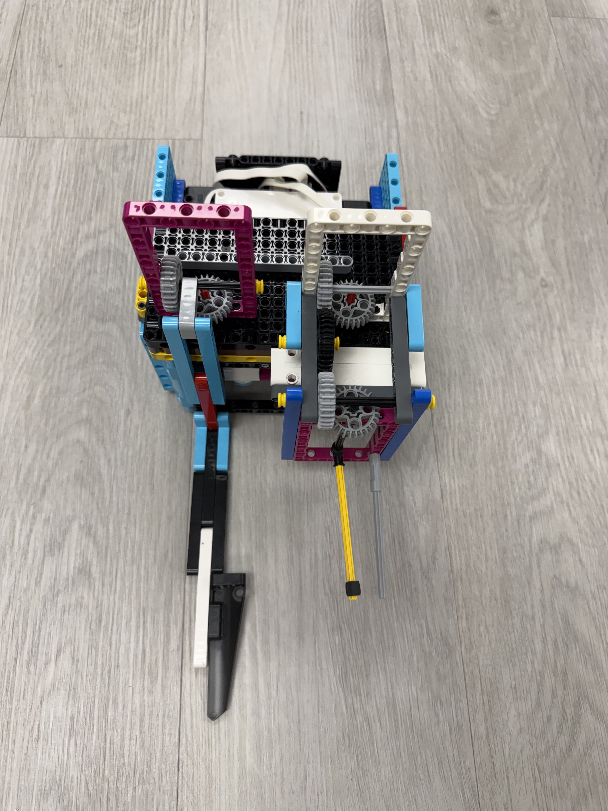
Design & Execution
Challenges: The mechanism was complex and prone to jamming. Timing between actions was difficult to calibrate.
Solution: Simplified mechanism for reliability.
Outcome: Reliable performance with 90% success rate. Quick attachment swap makes this run efficient.
Run 2: Missions 1 & 2
Missions: Mission 1, Mission 2, Mission 15
Points Target: 70 points
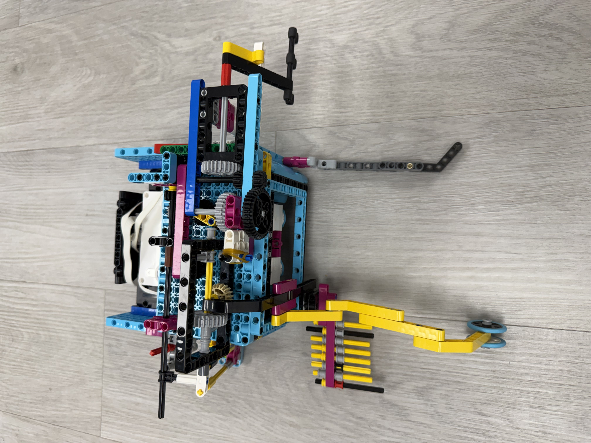
Design & Execution
Solution: Added a passive guide rail to help align with mission models. Optimized motor speeds and added PID corrections.
Outcome: Achieved 95% success rate in practice. Consistently scores 70 points in this run.
Run 3: Missions 11, 12 & 15
Missions: Mission 11, Mission 12, Mission 15
Points Target: 90 points

Design & Execution
Approach: Attempted to complete missions quickly to maximize remaining time.
Challenges: Higher speeds reduced accuracy. Occasional overshooting caused mission failures.
Solution: Implemented variable speed control—faster on long straights, slower near mission models. Added deceleration ramps.
Outcome: Maintains good speed while ensuring accuracy. Completes in under 30 seconds with high reliability.
Run 4: Missions 5, 6, 7 & 8
Missions: Mission 5, Mission 6, Mission 7, Mission 8
Points Target: 90 points
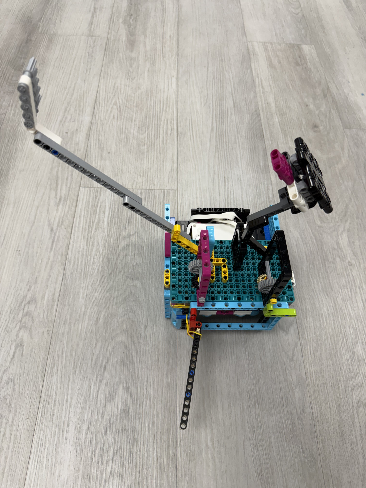
Design & Execution
Approach: Ambitious design to complete three missions in one run.
Challenges: Path was too complex, increasing failure points. Robot occasionally missed alignment marks.
Solution: Fine-tuned PID values for each segment. Added a passive 'directional hinge' attachment that automatically engages during the run.
Outcome: Our highest-scoring run with excellent reliability. Key to our competition strategy.
Run 5: Missions 9 & 10
Missions: Mission 9, Mission 10
Points Target: 60 points
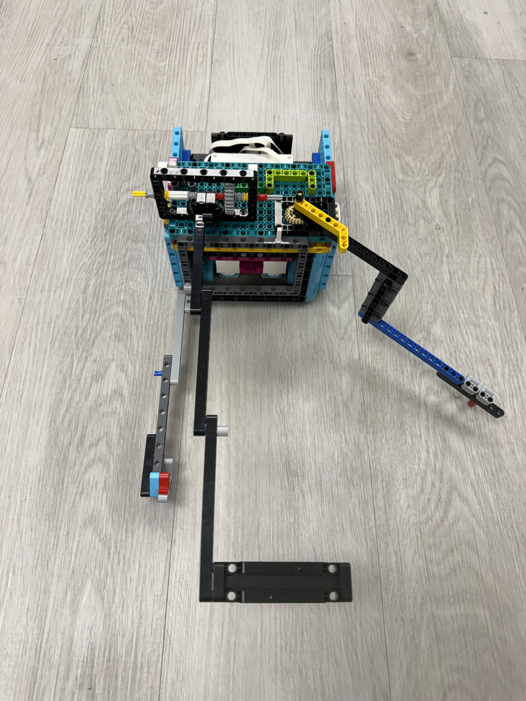
Design & Execution
Approach: Required extremely precise positioning for small mission models.
Challenges: Several coordinated movements were required, and the smallest drift caused mission failure.
Solution: Combined an active attachment with a one-way door passive part and better regulated speed across the different movements.
Outcome: Reliable execution. Consistent 60-point contribution.
Run 6: Missions 14 & 15
Missions: Mission 14, Mission 15
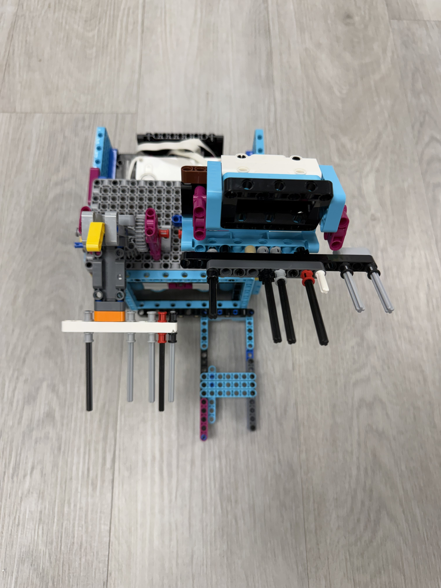
Design & Execution
Approach: Run 6 focuses on capturing the mine cart, dropping off the last flag, and delivering all artifacts to the forum.
Mechanical Context & Programming Focus
Our mechanical work focused on making the robot strong, readable, and easy for all four teammates to modify. The box frame protects the hub while keeping attachment points visible.
Our attachment workflow is intentionally simple: build a mission idea, connect it to the large panel surfaces, test the run, then adjust the mechanism without rebuilding the entire robot.
Programming and mechanical design grew together. As paths changed, the robot frame gave us a reliable starting point for repeated testing before swim practice, after swim practice, and whenever snacks appeared.
Programming Evolution & Improvement

To improve consistency, we switched from block coding to Pybricks, which allows a much higher number of control loop iterations. We use the gyro sensor for heading, motor encoders for distance, and degree-based motor control.

We tested various Kp and Kd values to optimize drive performance. Our best results came from Kp=1.15 and Kd=0.02, which provided minimal drift across different speeds and distances.
PID Tuning Results
Straight Line PID Testing
We tested different Kp and Kd values to see how our robot drives on a straight line.
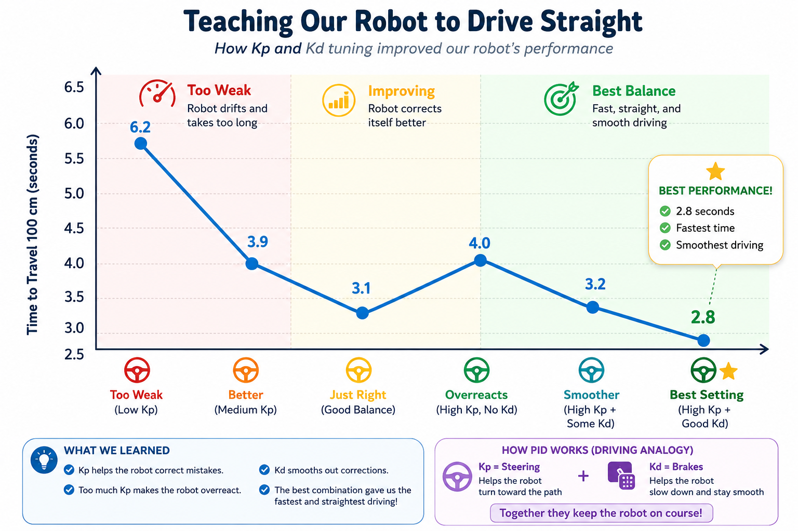
What is Kp?
Kp decides how strongly the robot corrects a mistake.
- Low Kp = slow correction
- High Kp = overreacts and zig-zags
What is Kd?
Kd helps calm the robot down and stop the wobble.
- Low Kd = more wobble
- Higher Kd = smoother driving
How We Test
- Tape a line on the floor
- Run the robot with different Kp and Kd values
- Watch the robot and record the results
- Find the best balance of speed and stability
What Did We Learn?
Kp too low is too slow to fix mistakes. Kp too high overreacts and zig-zags. Adding Kd calms the robot down and makes the path smoother.
Our Best Setting
Kp = 0.8 to 2.0
Kd = 0.3 to 0.8
Fast enough, very stable, stays on the line, and good for missions.
Experiment, test, improve! Small changes in Kp and Kd make a big difference in how our robot drives.
Drive Straight Function
def drive_straight(distance_mm, speed, kp=1.15, kd=0.02):
robot.reset_gyro()
robot.reset_encoders()
while robot.get_distance() < distance_mm:
error = robot.get_heading()
correction = (kp * error) + (kd * (error - prev_error))
left_power = speed - correction
right_power = speed + correction
robot.set_motors(left_power, right_power)
prev_error = error
robot.stop()Turn Function
def turn(degrees, speed, kp=1.0):
robot.reset_gyro()
while abs(robot.get_heading()) < abs(degrees):
error = degrees - robot.get_heading()
power = kp * error
robot.set_motors(power, -power)
robot.stop()Our drive-straight code uses PID-style corrections with optimized values: Kp=1.15 and Kd=0.02. These values emerged from systematic testing across different speeds and distances.
The result is repeatable and reliable performance, even under varying loads and battery levels. We also manage our code using GitHub for collaboration and version control.
Version Control with GitHub
Why We Use GitHub
GitHub allows our team to collaborate on code safely. Each team member can work on different runs or features without overwriting others' work.
We use branches for experimental changes and commits to track our progress. This means if something breaks, we can roll back to a working version.
Benefits for Our Team
- Collaboration: Multiple programmers can work simultaneously
- History: Every change is documented with commit messages
- Backup: Code is safely stored in the cloud
- Testing: We can experiment without breaking working code
- Learning: We review each other's code and learn better practices
GitHub in Action

We organize runs, attachments, and PID tuning experiments with clear commit history and pull requests.
Innovation Project: Tidal Scout
Helping archaeologists explore caves more safely
Our Innovation Project began during a field trip to the Museum of Natural History, where we learned about archaeology and became fascinated by caves. Curious about the challenges archaeologists face when exploring these environments, we chose Cave Safety as the focus of our project.
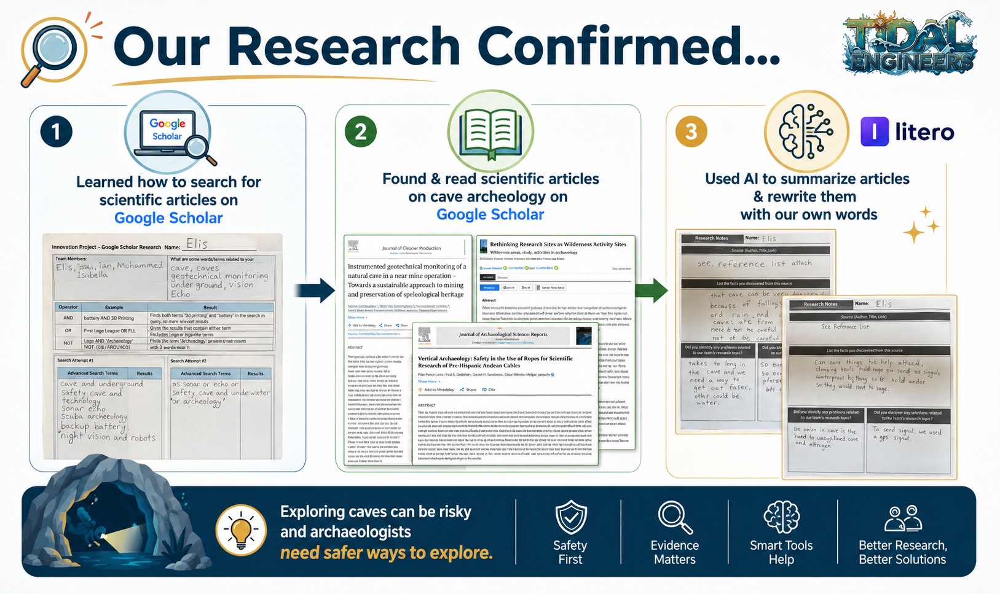
Research
Using Google Scholar and other reliable sources, we researched the challenges archaeologists face when exploring caves. We learned that caves can be dangerous due to low oxygen levels, unstable rock formations, flooding risks, and narrow passages. While technologies such as drones and gas detectors already exist, our research showed that many current solutions are too large, too heavy, too expensive, or designed to solve only a single problem.
References
- Barbaro, C.C. et al. (2024). Safeguarding archaeological excavations and preserving cultural heritage in cave environments through engineering geological and geophysical methods. Journal of Archaeological Science: Reports, 60, 104868. doi:10.1016/j.jasrep.2024.104868.
- Brandi, I.V. et al. (2019). Instrumented geotechnical monitoring of a natural cave in a near mine operation: towards a sustainable approach to mining and preservation of speleological heritage. Journal of Cleaner Production, 239, 118040. doi:10.1016/j.jclepro.2019.118040.
- Peixotto, B., Klehm, C. and Eifling, K.P. (2021). Rethinking research sites as wilderness activity sites: reframing health, safety, and wellness in archaeology. Advances in Archaeological Practice, 9(1), 1-9. doi:10.1017/aap.2020.50.
- Petracek, P., Kratky, V., Petrlik, M., Baca, T., Kratochvil, R. and Saska, M. (2021). Large-scale exploration of cave environments by unmanned aerial vehicles. IEEE Robotics and Automation Letters, 6(4), 7596-7603. doi:10.1109/LRA.2021.3098304.
- Promneewat, K. and Taksavasu, T. (2024). Performance of affordable 2D cave scanning technique from LiDAR for constructing 3D cave models. Advanced LiDAR, 4(1), 1-8. https://hal.science/hal-04558554/.
- Redovnikovic, L., Jakopec, A., Bedkowski, J. and Jagetic, J. (2024). The affordable DIY Mandeye LiDAR system for surveying caves, and how to convert 3D clouds into traditional cave ground plans and extended profiles. International Journal of Speleology, 53(3). doi:10.5038/1827-806X.53.3.2535.
- Saez, P.I. et al. (2021). Vertical archaeology: safety in the use of ropes for scientific research of pre-columbian Andean cultures. International Journal of Environmental Research and Public Health, 18(7), 3536. doi:10.3390/ijerph18073536.
- Tringali, L., Canciani, G., Debenjak, A. and Tripari, T. (2024). Charlotte: a modern tool for cave surveying. International Journal of Speleology, 53(3). doi:10.5038/1827-806X.53.3.2496.
Initial Idea
When we first started designing, we knew we wanted to build something that could travel into caves and do more than one job. Our first sketches included lots of exciting ideas, such as digging tools, cameras, sensors, and even a robot that could both drive and fly! We explored many different concepts and imagined how a rover and drone could work together as a team to help archaeologists explore hard-to-reach areas. During this ideation phase, we focused on generating as many creative ideas as possible before deciding which features would be the most useful and practical.
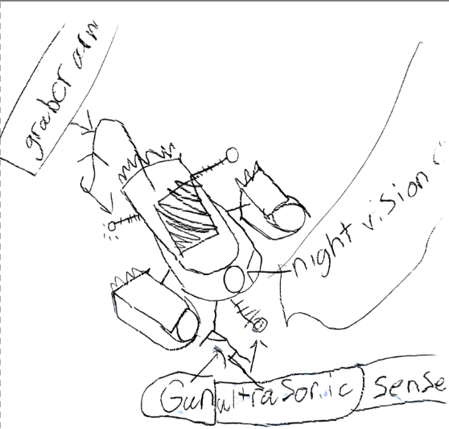
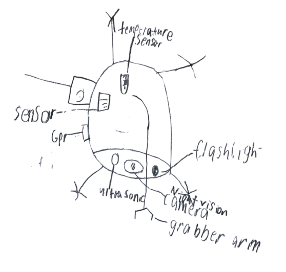
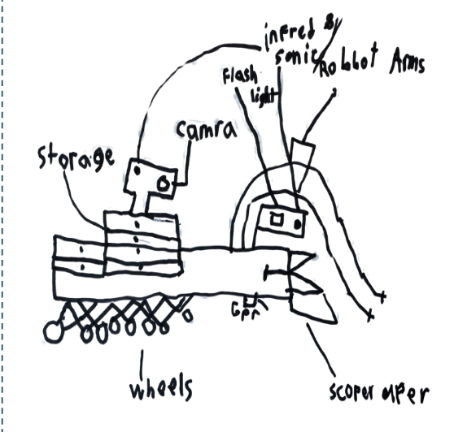
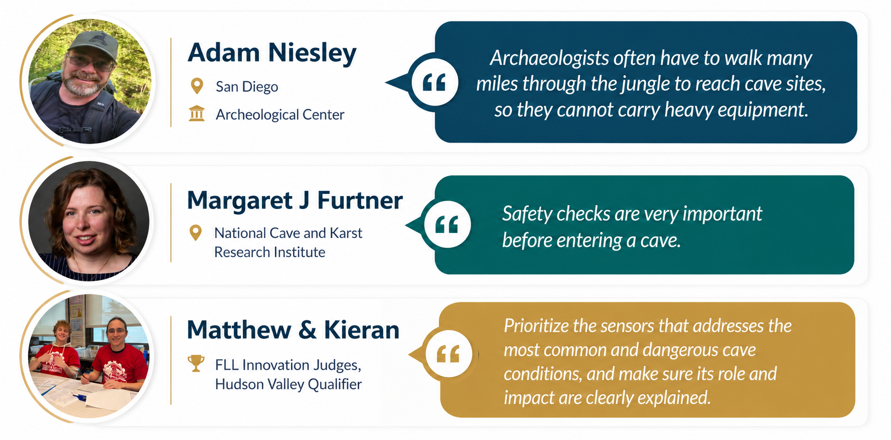
Expert Feedback
- Adam Niesley told us caves are wet and tools need to be waterproof.
- Margaret J. Furtner said tools should be portable and connect to phones.
- Judges encouraged us to focus on the most dangerous cave conditions and explain impact clearly.
Iteration
After gathering feedback from experts and learning more about the real challenges archaeologists face, we decided to improve our design. We removed many of the extra tools and features that were not directly related to cave safety and focused on the sensors that could help identify dangerous conditions. We redesigned the system to be smaller, lighter, and easier to transport through tight cave passages and rough terrain.
We also wanted our solution to be affordable and practical so that archaeologists and research teams could use it in real-world fieldwork without needing expensive or specialized equipment. By simplifying our design and focusing on the most important safety needs, we created a solution that is more effective, portable, and realistic to use in the field.
Prototype Evolution
Tidal Scout Rover (Gen 1 Prototype)
Our first-generation Tidal Cave Scout Rover was designed to help archaeologists assess cave conditions before entering potentially dangerous environments. We wanted to create a compact, lightweight, and affordable solution that could travel into caves and gather important safety information. To keep costs low while still building a capable rover, we used Thunder3D, a 3D-printed robotic platform that gave us a strong foundation for our design.
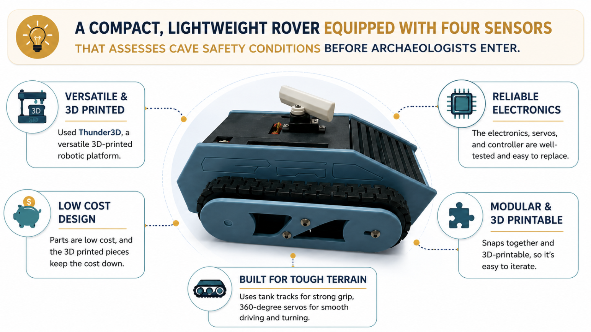
The rover was equipped with four key sensors that monitor some of the most common cave hazards. An air quality sensor checks for unsafe conditions, a distance sensor helps detect obstacles and narrow passages, a vibration sensor can identify unstable surfaces, and a temperature and humidity sensor monitors environmental conditions inside the cave. Together, these sensors help answer one critical question: Is it safe for archaeologists to enter the cave? By collecting this information before people enter, our rover can help reduce risk and improve safety.
To bring our rover to life, we used a Pimoroni Pico Plus 2 W microcontroller as the brain of the system. An OLED screen displays sensor readings in real time, allowing users to quickly understand cave conditions. We also used a STEMMA hub and custom soldering to connect all of the components efficiently while keeping the rover lightweight and easy to transport. Building this first-generation prototype taught us valuable lessons about electronics, programming, sensor integration, and designing technology for real-world challenges.
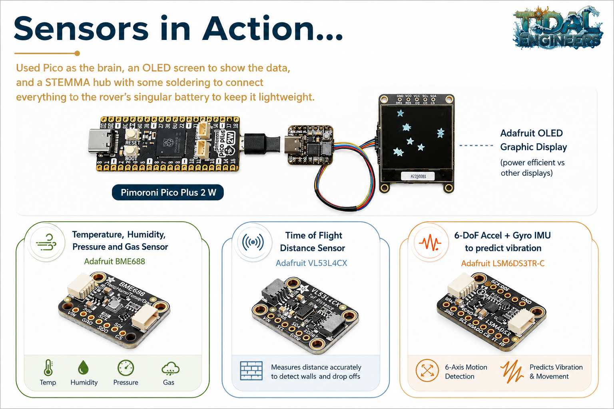
Feedback Round 2
We did not stop after our first redesign. We shared our updated Tidal Cave Scout with archaeologists, subject matter experts, and FLL judges to gather even more feedback. Their suggestions helped us understand what would make the rover more useful in real-world cave exploration. They encouraged us to focus on making the rover easier to operate, lighter to carry through difficult terrain, and more capable of navigating the uneven surfaces commonly found in caves.
Using this feedback, we made several important improvements. We upgraded the tracks to provide better grip on rough cave surfaces, reduced the overall weight to improve portability, and developed a phone-based interface that allows archaeologists to control the rover and view sensor data directly from their smartphones. These enhancements made the Tidal Cave Scout more practical, user-friendly, and better suited for real-world fieldwork.
Tidal Scout Rover (Gen 2 Prototype)
To make the Tidal Cave Scout even more effective, we continued improving both the hardware and technology inside the rover. We reduced the rover's weight by switching to PLA Aero filament, a lightweight 3D-printing material that made the rover easier to carry and more energy efficient. We also added a UPS battery system to provide a more reliable power supply, helping the rover operate longer and reducing the risk of unexpected shutdowns during cave exploration.
At the same time, we upgraded several of the rover's key components. We improved the sensors to provide more accurate environmental data, added a night vision camera to help navigate dark cave environments, and upgraded the onboard computer to a Raspberry Pi 4. This gave the rover more processing power, allowing it to collect, analyze, and display information more efficiently while supporting additional features and future upgrades. We also learned how a 28BYJ-48 stepper motor can work with a ULN2003 motor driver and Raspberry Pi. Stepper motors move in small, controlled steps, making them ideal for precise robot functions such as rotating cameras, moving gears, or positioning sensors. The ULN2003 driver allows the Raspberry Pi to control the motor through four input signals, while a dedicated motor power supply helps make the system safer, more stable, and more reliable.
To make the rover easier for archaeologists to use in the field, we added wireless connectivity through a portable router. This allows the Tidal Cave Scout to connect directly to a smartphone, giving users access to live camera footage, sensor readings, and rover controls from almost anywhere near the exploration site. Together, these improvements transformed the rover from a basic prototype into a smarter, more capable, and more reliable tool for real-world cave exploration.
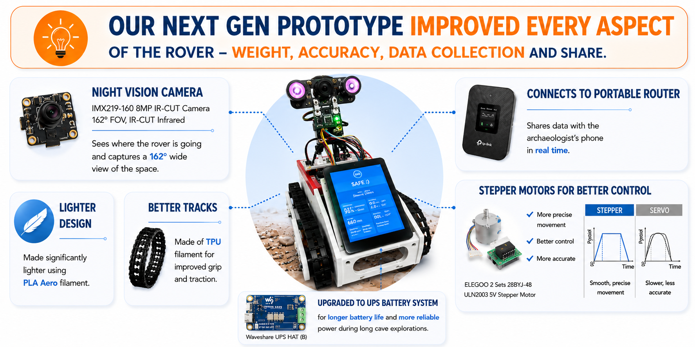
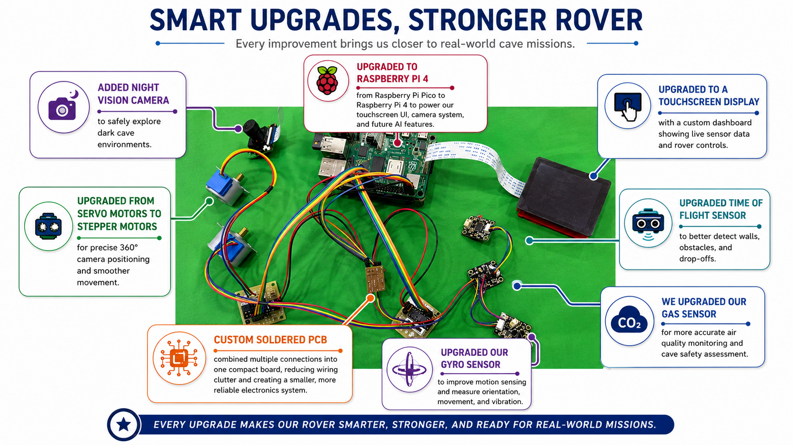
Stepper Motor Engineering Notes


- The ULN2003 driver has four main control inputs: IN1, IN2, IN3, and IN4.
- The Raspberry Pi activates the inputs in a sequence of small steps. Reversing the sequence changes the motor's direction.
- The tutorial maps Raspberry Pi GPIO pins 14, 15, 18, and 23 to the four driver inputs.
- A Python control function can set both direction and speed, making the motor easier to test and tune.
- Because motors draw significant current, the tutorial recommends powering the motor through the driver with an external power supply instead of relying on the Raspberry Pi for extended use.
Source: 28BYJ-48 stepper motor with Raspberry Pi and ULN2003 tutorial.
Custom PCB Engineering Notes
To make our rover smaller, cleaner, and more reliable, we designed and built our own custom PCB. We started by testing our ideas on a breadboard and creating a working circuit. Our first manufacturing approach was to use a UV printer to transfer the PCB design onto a copper board and then use ferric chloride to etch away the unwanted copper. While the PCB looked great, we had difficulty cutting and finishing the board accurately. After learning from this challenge, we switched to a CNC carving method, which allowed us to precisely carve the copper traces and drill the holes. We then carefully soldered all the components onto the board. The finished PCB reduced wiring clutter, saved space inside the rover, created stronger connections, and transformed our prototype into a more reliable system for real-world cave exploration.
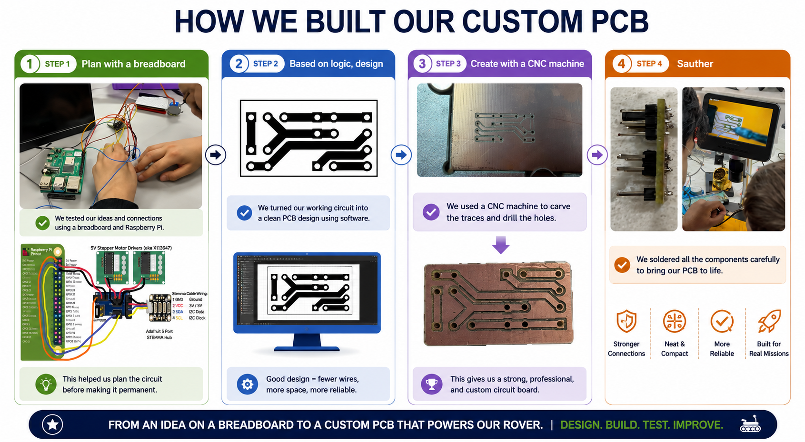
Feedback & Impact
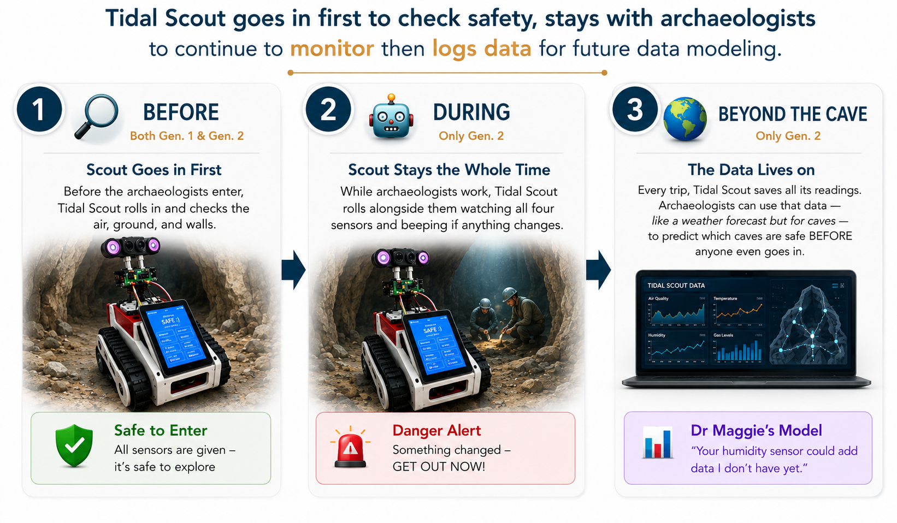
How Tidal Scout Helps
The Tidal Scout is designed to support archaeologists throughout the entire cave exploration process. Before anyone enters a cave, the rover travels ahead to assess safety conditions by measuring air quality, temperature, humidity, distance to obstacles, and signs of unstable terrain. This helps archaeologists identify potential dangers and make informed decisions about whether it is safe to enter.
Once exploration begins, the Tidal Scout continues monitoring conditions in real time. As archaeologists work, the rover can provide ongoing updates about environmental changes, helping detect new hazards such as poor air quality, falling rocks, flooding risks, or blocked passages. This allows teams to respond quickly if conditions become unsafe.
The Tidal Scout also records and stores data from every exploration. Over time, this information can help archaeologists identify patterns, compare conditions across different caves, and better predict future safety risks. By combining pre-entry assessment, real-time monitoring, and long-term data collection, the Tidal Scout aims to make cave exploration safer, smarter, and more informed.
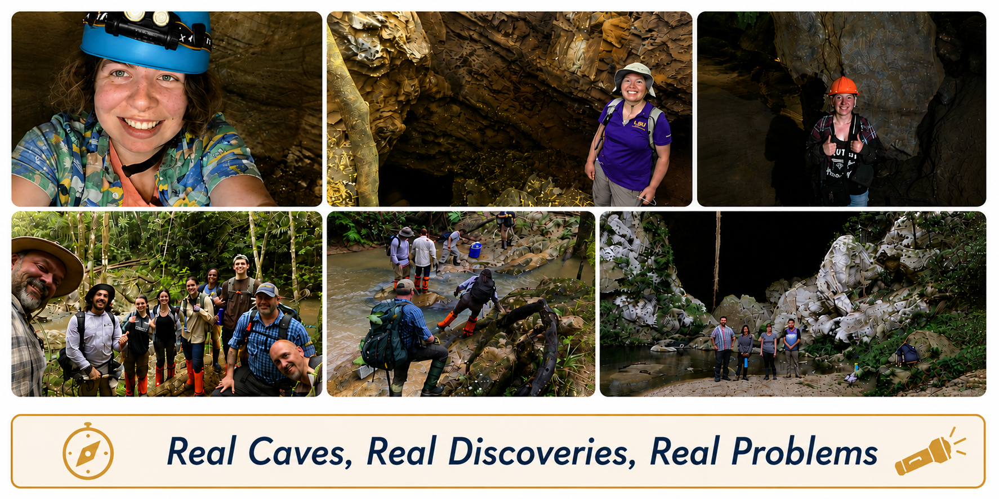
Why It Matters
Our hope is that the Tidal Cave Scout can help archaeologists like Dr. Maggie Furtner, Mr. Adam Niesley, and many others explore caves more safely while continuing their important work of discovering and protecting history. By helping identify potential dangers before people enter a cave and monitoring conditions during exploration, the Tidal Cave Scout can reduce risks and provide valuable information to research teams.
We believe that every artifact, cave painting, and archaeological site tells a story about our past. By making cave exploration safer and more accessible, our solution could help archaeologists spend less time worrying about hazards and more time uncovering and preserving these stories for future generations. While our project is still a prototype, we hope it inspires new ideas and technologies that help protect both the people who explore caves and the history they work so hard to preserve.
Community Outreach
Tidal Engineers wanted our rookie season to reach beyond the robot table. We shared our project, code, resources, and team story with school leaders, families, students, and other teams to help more people discover robotics, coding, innovation, and STEAM.
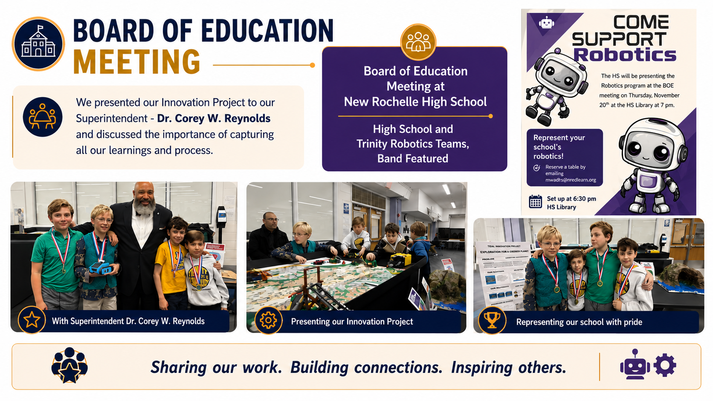
Board of Education Presentation
We presented our Innovation Project and FLL journey to the Superintendent and Board of Education in New Rochelle to help build awareness and support for our FLL program and STEAM education.
We shared how robotics, coding, teamwork, and innovation helped us grow as students and problem-solvers. At the presentation, we were honored with a science medal recognizing our hard work, creativity, and dedication throughout the season.
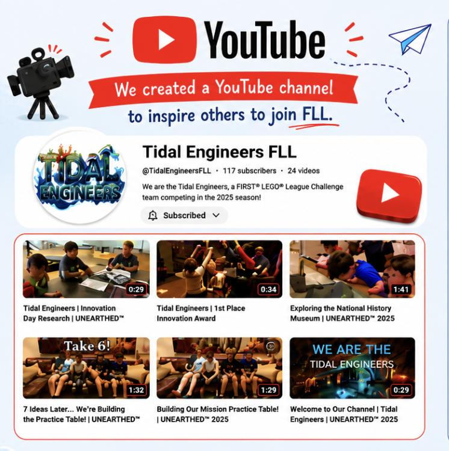
YouTube Channel
We created a YouTube channel to document and share our FLL journey with other students, families, and teams. Through videos of our robot runs, attachment designs, coding progress, competitions, and team experiences, we hope to inspire more kids to explore FIRST LEGO League, engineering, and robotics.
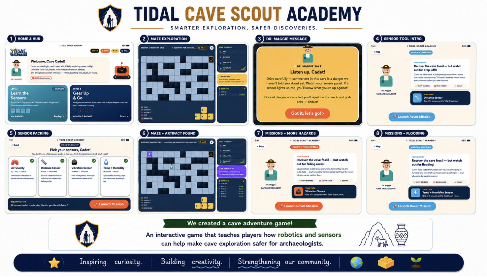
Interactive Cave Safety Game
We designed and developed an interactive game to teach others how robotics, sensors, and engineering can improve cave safety for archaeologists and explorers. The game helps players understand real-world cave dangers while showing how technology can collect important safety data before humans enter risky environments.
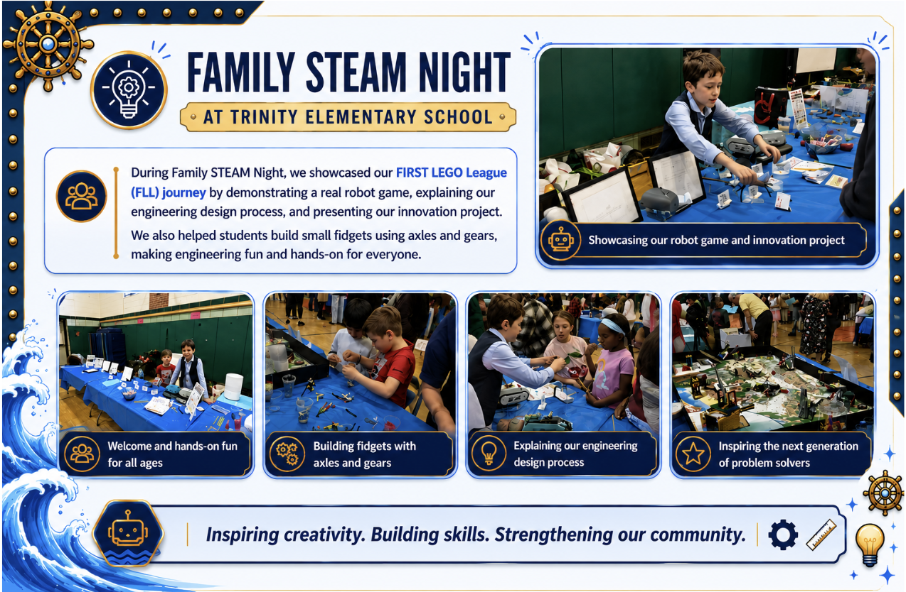
Family STEAM Night
We hosted a Family STEAM Night for more than 150 families where we showcased our FLL robot game, explained our coding and engineering design process, and demonstrated how our robot completed missions on the competition table.
We also led hands-on robotics, coding, and building activities that encouraged younger students and families to explore STEAM, teamwork, and the exciting world of FIRST LEGO League.
Shared GitHub Resources
We expanded our outreach by creating a GitHub repository where we shared our code, robot ideas, engineering resources, and project materials.
By making our work accessible online, we hope to support and inspire more students, rookie teams, and educators to explore robotics, programming, innovation, and the world of FLL.
Core Values
The Core Values are really important to us, and we're excited to share what each one means to our team!
Meet the Team
We're a rookie FLL team making big waves! Fun facts about us: we are probably one of the youngest teams in the competition. Our team name, Tidal Engineers, represents both swimming and innovation. We build robots almost as fast as we swim laps! From the swimming pool to the robot table - we never stop moving!
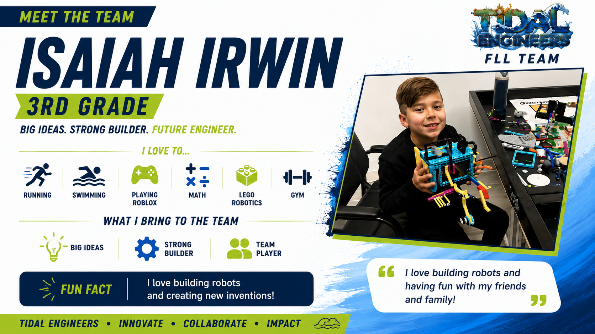
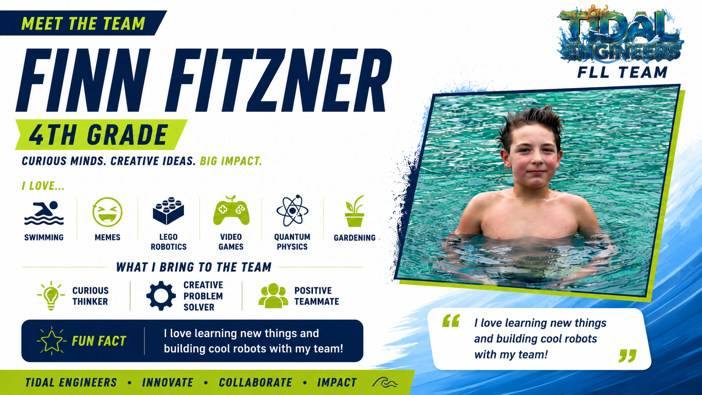
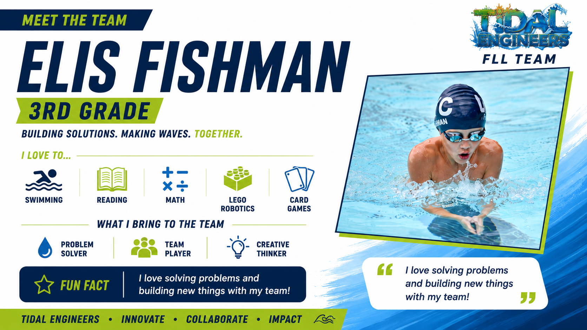
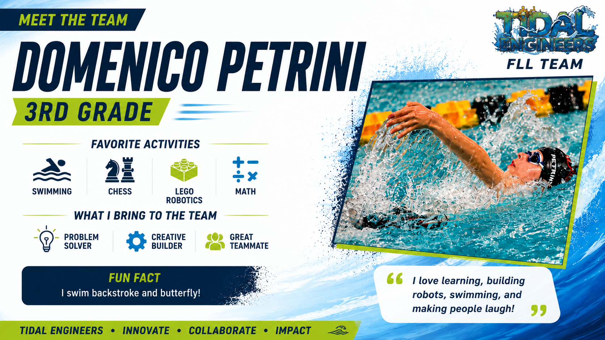
Discovery & Innovation: We love learning new facts, solving challenges, and turning our curiosity into working ideas.
Elis
Inclusion & Teamwork: Everyone belongs on our team. We make sure every teammate has a role and every idea gets heard.
Finn
Impact: We want to do something good for others by sharing what we learn and building tools that can help real people.
Isaiah
Fun: We laugh a lot, build together, and turn playdates into robot work. Having fun helps us keep learning.
Dom
Our Coaches & Mentors
As a rookie team, it was very important for us to learn from mentors, experienced teams, and subject matter experts who helped guide us throughout our FIRST LEGO League journey. Their advice, encouragement, and shared experiences helped us learn faster, avoid mistakes, and grow more confident as engineers, coders, and innovators.
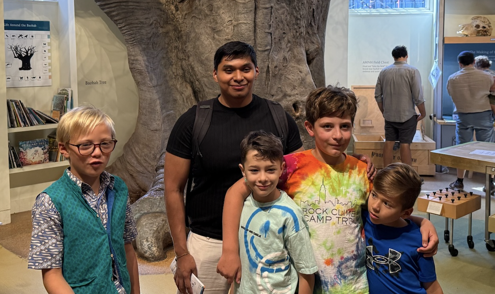
Coach Gio
Coach Gio helped turn our ideas into real robots by teaching us coding, strategy, testing, and problem-solving. He pushed us to keep improving, think like engineers, and never give up when things didn't work the first time.
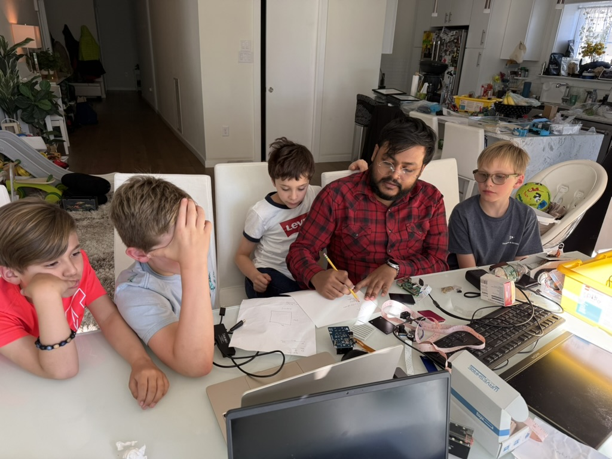
Coach Anik
Coach Anik guided our Innovation Project and helped us think bigger about real-world problems and creative solutions. He encouraged us to communicate our ideas clearly, work as a team, and believe that even rookie teams can make a real impact.
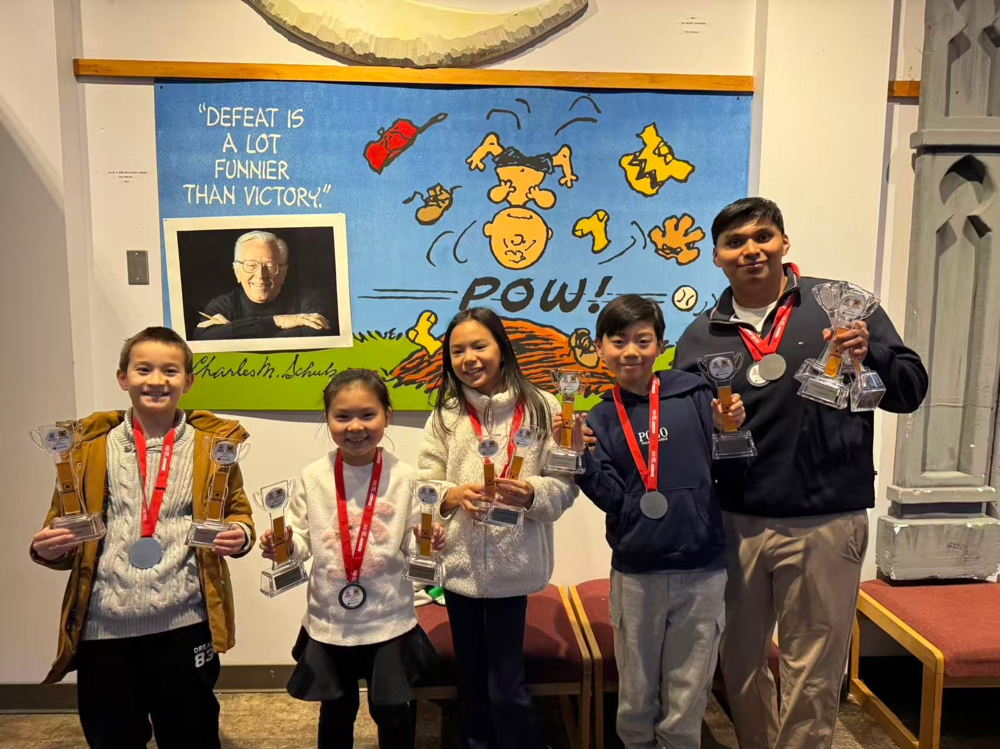
FLL Team 67843
A huge shoutout to FLL Team 67843 for being incredible mentors and supporting us throughout the season. They shared valuable competition tips, robot strategy ideas, and lessons they learned from their own FLL experiences. Their guidance helped us better prepare for competitions and believe in ourselves as a rookie team.
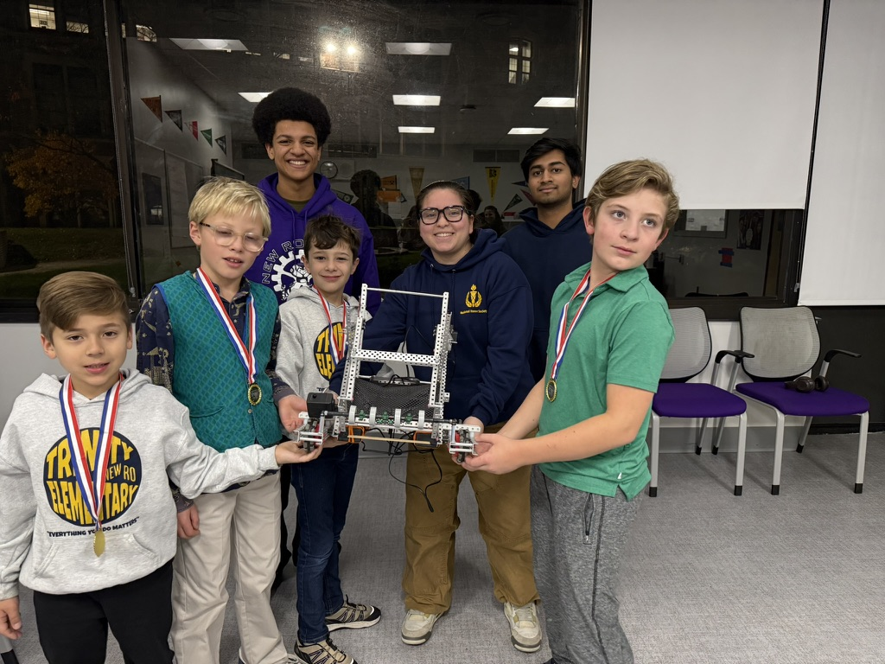
New Rochelle High School Robotics Team
We also want to thank the New Rochelle High School Robotics Team for supporting our journey and inspiring us with their advanced robotics knowledge and teamwork. Seeing older students succeed in robotics motivated us to keep learning, improving, and dreaming bigger about what we can achieve in STEAM and engineering.
Summary & Reflection
Tidal Engineers reflects a complete rookie-season design cycle: identifying problems, brainstorming, testing, and iterating. By combining friendship, swim-team discipline, mechanical design, programming, and teamwork, we are building a robot story that is reliable, efficient, and repeatable.
This process helped us qualify at John Jay Middle School, earn 3rd place and the Best Innovation Award at the Hudson Valley Regional Championship, and grow from four rookies into one amazing team.
Now we are preparing for the American Robotics Invitational on June 6-7, 2026, where we will represent the New York State area and keep building on the same cycle of testing, learning, improving, and having fun.
Season Gallery
A growing gallery from our first nine months: swim friends becoming engineers, research trips, build sessions, outreach, judging prep, and plenty of team fun.
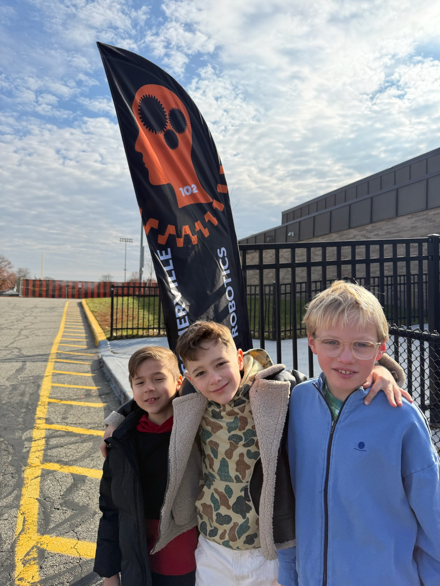
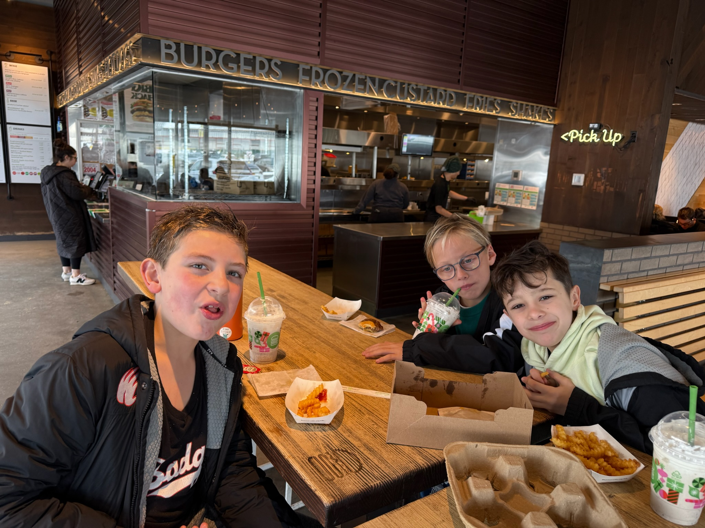
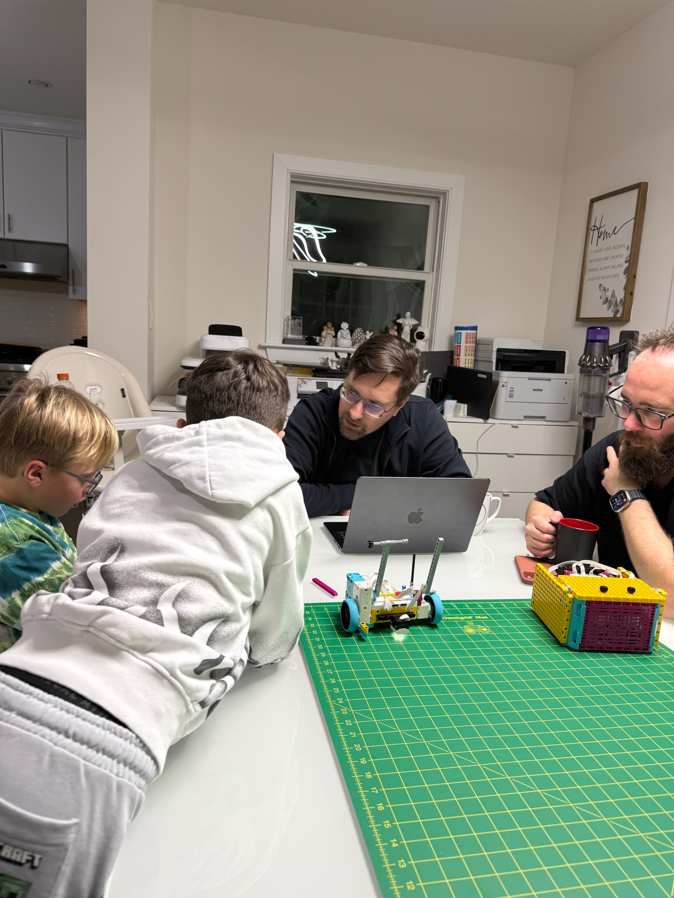